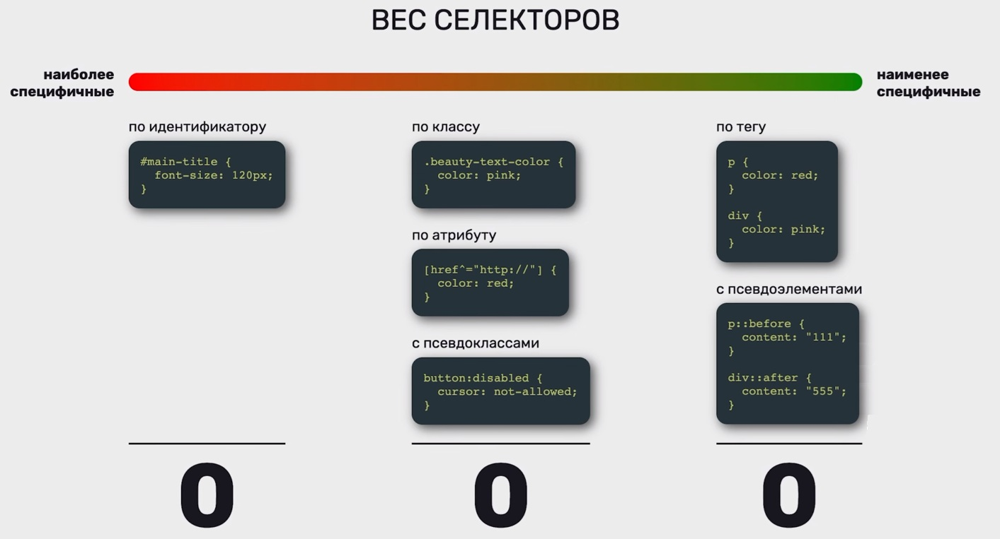
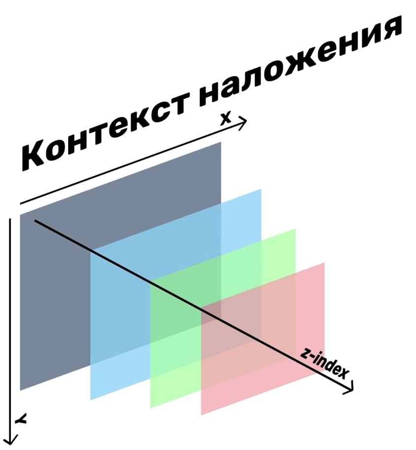

Вопросы по HTML и CSS
1. Что такое doctype? Рассказать про head, meta, title, body.
Doctype
это инструкция в начале HTML-документа, которая указывает браузеру версию HTML и активирует стандартный режим рендеринга.
Head
Элемент содержит метаданные страницы, невидимые пользователю. Он включает информацию о кодировке, стилях, скриптах и других ресурсах. Размещается сразу после doctype и перед body.
Meta
Теги meta внутри head передают метаданные: например, charset="UTF-8" для кодировки, viewport для мобильной адаптации или description для поисковиков. Они не отображаются на странице, но влияют на SEO и поведение браузера.
Title
Задаёт заголовок страницы, видимый во вкладке браузера и поисковой выдаче.
Body
Элемент body содержит весь видимый контент: текст, изображения, формы и другие элементы.
2. Для чего нужны атрибуты name и value в элементах формы (в input, select и т.д).
Формы в HTML — это блоки для сбора данных от пользователя (логин, пароль, выбор опций), которые отправляются на сервер для обработки. Элемент form оборачивает все поля, а атрибуты name и value определяют, как данные передаются: name — ключ (имя поля), value — значение.
3. Что такое HTML-формы? Опишите основные элементы формы (form, label, fieldset, legend) и их роль. Как работает отправка формы (method: GET/POST, action). Как сделать так, чтоб можно было отправлять файлы на сервер.
HTML‑форма — это контейнер, который собирает значения полей (input, select и т.д.) и отправляет их на сервер по HTTP‑запросу.
form — блок, внутри которого находятся элементы формы. action и
method - его обязательные атрибуты.
action — URL обработчика на сервере(Скрипта) (куда пойдёт запрос).
method — HTTP‑метод отправки: GET или POST. Пример:
<form action="/submit" method="post">
...
</form >
Элементы формы
<label> — подпись для поля ввода. Кликаешь по надписи —
фокус попадает в соответствующий input, плюс это критично для
пользователей с особенностями восприятия. Без связки for и id
скриптридеры не смогут с ними работать. Связь делается через for и
id:
fieldset — логическая группа полей внутри формы.
Используется, когда много связанных полей (например, «Личные
данные», «Адрес»).
legend — заголовок группы полей; должен быть первым ребёнком
внутри fieldset.
<fieldset>
<legend>Выбор по радио</legend>
<label for="sex">Выберите пол</label>
<p>
<label for="man">Мужчина</label>
<input type="radio" id="man"
name="sexUser" value="Мужчина" />
</p>
<p>
<label
for="women">Женщина</label>
<input type="radio" id="woman"
name="sexUser" value="Женщина" />
</p>
</fieldset>
Как работает отправка формы (GET / POST, action)
Когда нажимаешь <button type="submit"> или <input
type="submit">, браузер: <> 1. Берёт все элементы с
атрибутом name внутри form.
2. Собирает пары name=значение.
3. Посылает HTTP‑запрос на URL из action с методом из method.
method="GET"
Данные кодируются в URL после ?: /submit?name=Alex&age=25. Используется для простых запросов (поиск, фильтрация). Плохо для паролей и больших данных.
method="POST"
Данные идут в теле HTTP‑запроса, URL остаётся чистым. Подходит для логина, регистрации, отправки больших форм.
Пример:
<form action="/handle-form"
method="post">
<label for="login">Логин:</label>
<input id="login" name="login"
type="text">
<label for="password">Пароль:</label>
<input id="password" name="password"
type="password">
<button type="submit">Войти</button>
</form> На сервер прилетит что‑то вроде:
login=...&password=....
Вот в действии
Как отправлять файлы на сервер
Чтобы форма умела отправлять файл, нужно одновременно выполнить
три условия:
1. Внутри формы — поле для выбора файла. Прописать type="text"
2. Метод формы обязательно POST. Потому что обычный GET не умеет
нормально передавать большие бинарные данные через URL, а POST с
enctype="multipart/form-data" как раз и создан для отправки файлов
в теле запроса.
3. Добавить атрибут enctype="multipart/form-data":
<form action="/upload" method="post"
enctype="multipart/form-data">
<label for="avatar">Загрузите
аватар:</label>
<input id="avatar" name="avatar"
type="file">
<button
type="submit">Отправить</button>
</form>
enctype="multipart/form-data" говорит браузеру отправлять данные
«частями» (multipart), что позволяет прикреплять бинарные файлы, а
не только обычный текст.
Без этого атрибута файл нормально на сервер не дойдёт.
4. Что такое семантическая верстка, зачем нужна. Рассказать про article, section, footer, header, aside, nav, figure. Зачем нужны ul и ol, что верстают используя ul и ol.
Семантика - смысловое разделение кода страницы на блоки, на основе смысла их содержимого. Идея в том, чтобы код был понятен не только человеку на глаз, но и браузеру (для продвижения в поиске), скринридеру, поисковику и другим программам.
Теги
header - верхняя часть страницы (шапка), секции, блок и т.д.
(Несколько на странице)
footer - нижняя часть страницы (шапка), секции, блок и т.д.
(Несколько на странице)
main - основная часть страницы (Один на страницу)
section - независимые функциональные блоки. (Обязателен заголовок)
article - самодостаточный блок какой-либо сущности. (Типа если
можно вынести как блок рекламы - то это он)
aside - блок с доп./косвенным содержимым. Типа боковая (не всегда)
колонка/фильтры и т.д.
nav - блок навигации. (несколько на страницу)
figure - обозначение картинки, диаграммы, кода, таблицы и т.д.

ul Типа:
<ul>
<li>Я элемент маркированного спика</li>
<li>Я элемент маркированного спика</li>
</ul>
- Я элемент маркированного спика
- Я элемент маркированного спика
- Я элемент маркированного спика
ol Типа:
<ol>
<li>Я элемент маркированного спика</li>
<li>Я элемент маркированного спика</li>
</ol>
- Я элемент нумерованного спика
- Я элемент нумерованного спика
- Я элемент нумерованного спика
5. В контексте CSS. Что такое БЭМ, зачем нужен. Привести примеры. Что такое внешняя геометрия и почему БЕМ ее запрещает. Плюсы и минусы БЕМ.
БЭМ — компонентный подход к веб-разработке, в основе которого
лежит принцип разделения интерфейса на независимые блоки.
Он позволяет легко и быстро разрабатывать интерфейсы любой
сложности и повторно использовать существующий код, избегая
«Copy-Paste».
Блок
Функционально независимый компонент страницы, который может быть
повторно использован. В HTML блоки представлены атрибутом class.
Название блока характеризует смысл («что это?» — «меню»: menu,
«кнопка»: button), а не состояние («какой, как выглядит?» —
«красный»: red, «большой»: big).
Пример
<!-- Верно. Семантически осмысленный блок `error` -->
<div class="error"></div>
<!-- Неверно. Описывается внешний вид -->
<div class="red-text"></div>
Блок не должен влиять на свое окружение, т. е. блоку не следует
задавать внешнюю геометрию (в виде отступов, границ, влияющих на
размеры) и позиционирование.
В CSS по БЭМ также не рекомендуется использовать селекторы по
тегам или id.
Таким образом обеспечивается независимость, при которой возможно
повторное использование или перенос блоков с места на место.
Элемент
Составная часть блока, которая не может использоваться в отрыве от
него.
Название элемента характеризует смысл («что это?» — «пункт»: item,
«текст»: text), а не состояние («какой, как выглядит?» —
«красный»: red, «большой»: big).
Структура полного имени элемента соответствует схеме:
имя-блока__имя-элемента. Имя элемента отделяется от имени блока
двумя подчеркиваниями (__).
Пример
<!-- Блок `search-form` -->
<form class="search-form">
<!-- Элемент `input` блока `search-form` -->
<input class="search-form__input">
<!-- Элемент `button` блока `search-form` -->
<button
class="search-form__button">Найти</button>
</form>
Модификатор
Cущность, определяющая внешний вид, состояние или поведение блока либо элемента.
<!-- Блок `search-form` имеет булевый модификатор `focused`
-->
<form class="search-form search-form_focused">
<input class="search-form__input">
<!-- Элемент `button` имеет булевый модификатор `disabled`
-->
<button class="search-form__button
search-form__button_disabled">Найти</button>
</form>
Вложенность
- Элементы можно вкладывать друг в друга.
- Допустима любая вложенность элементов.
- Элемент — всегда часть блока, а не другого элемента. Это означает, что в названии элементов нельзя прописывать иерархию вида block__elem1__elem2.
<!-- Блок `header` -->
<header class="header">
<!-- Вложенный блок `logo` -->
<div class="logo"></div>
<!-- Вложенный блок `search-form` -->
<form class="search-form"></form>
</header>
Принадлежность
Элемент — всегда часть блока и не должен использоваться отдельно от него.
<!-- Верно. Элементы лежат внутри блока `search-form` -->
<!-- Блок `search-form` -->
<form class="search-form">
<!-- Элемент `input` блока `search-form` -->
<input class="search-form__input">
<!-- Элемент `button` блока `search-form` -->
<button
class="search-form__button">Найти</button>
</form>
<!-- Неверно. Элементы лежат вне контекста блока `search-form`
-->
<!-- Блок `search-form` -->
<form class="search-form">
</form>
<!-- Элемент `input` блока `search-form` -->
<input class="search-form__input">
<!-- Элемент `button` блока `search-form` -->
<button
class="search-form__button">Найти</button>
Необязательность
Элемент — необязательный компонент блока. Не у всех блоков должны быть элементы.
<!-- Блок `search-form` -->
<div class="search-form">
<!-- Блок `input` -->
<input class="input">
<!-- Блок `button` -->
<button class="button">Найти</button>
</div>
Внешняя геометрия
Внешняя геометрия - это всё что влияет на то как расположен блок
относительно своих соседей (margin, position, float и т.п.): его
отступы наружу и позиционирование относительно окружения.
Внутренняя геометрия — это наоборот padding, размеры, границы, то
есть «как устроен блок изнутри».
Она запрещена в БЭМ так как способна повлиять при
переиспользовании блока в других местах.
Плюсы и минусы БЭМ
Плюсы БЭМ — предсказуемая структура, независимые блоки, меньше
конфликтов CSS, проще поддерживать и работать в команде.
Минусы — длинные классы, порог входа, привязка к структуре и
необходимость строго соблюдать правила.
6. Каскад, Специфичность (таблица), Наследование. 3 фактора.
Видос от ЛамковаКаскад
Каскад — это алгоритм выбора финального значения свойства, когда на один элемент действует несколько CSS‑правил.
Главные идеи
- Правила приходят из разных источников (стили браузера, стили пользователя, стили автора страницы).
- Браузер сравнивает важность, специфичность и порядок объявления и решает, какое значение взять.
2. Специфичность (и «таблица»)
Специфичность — это «вес» селектора; чем он выше, тем правило
важнее.
Упрощённая табличка (от меньшего к большему):
- Селектор по тегу: p, div, section — низкая специфичность.
- Класс, псевдокласс: .btn, .error, :hover, [type="text"] — выше.
- ID: #header — ещё выше.
- Стиль в атрибуте style="" — самый высокий среди обычных (inline‑стиль).
Если на элемент действуют два правила с разной специфичностью, победит более специфичный селектор.
Наследование
Наследование — это когда некоторые свойства CSS не задаются явно, а унаследуются от родителя.
- Наследуются, например: color, font-family, line-height.
- Не наследуются: margin, padding, border, width, height и т.д.
- Наследование можно управлять значениями inherit, initial, unset.
«3 фактора» в каскаде
В упрощённом виде (для экзамена) три фактора, которыми браузер руководствуется:
- Важность (importance / origin)
- !important побеждает обычные правила.
- Плюс источник: стили браузера < стили автора < !important и т.п.
- Специфичность селектора
- ID > класс / псевдокласс > тег.
- Порядок объявления (source order)
- Если важность и специфичность совпали, выигрывает последнее по порядку правило в CSS.
Наследование работает как дополнительный механизм: если элементу свойство не задано напрямую и нет более приоритетного правила, он берёт значение у родителя.
Каскад спецефичность наследование
Этот текста должен быть зеленым.
А этот параграф поборется за размер и цвет шрифта
7. Блочная модель, строчные элементы. Стандартная блочная модель CSS. Альтернативная блочная модель CSS.
Блочная модель
Блочная модель - это алгоритм расчета размеров каждого отдельно взятого элемента страницы. Совокупность всех свойств влияющих на размеры элементов.
Любой элемент в потоке — это прямоугольник из 4 слоёв:
- content — содержимое (текст, картинка).
- padding — внутренний отступ от контента до границы.
- border — рамка вокруг padding.
- margin — внешний отступ до соседних элементов.
Схема: итоговый размер = content + padding + border + margin.
Блочные (block-level)
- Всегда начинаются с новой строки.
- По умолчанию занимают всю доступную ширину родителя.
- Можно задавать width/height, margin/padding по всем сторонам.
- Примеры: div, section, article, header, footer, ul, p
Строчные (inline-level)
- Не начинают новую строку, идут «в строку» с текстом.
- Ширина = ширина содержимого.
- width/height практически не работают; вертикальные margin/padding ведут себя ограниченно.
- Примеры: span, a, strong, em, label.
Альтернаятивная блочная модель
Альтернативная модель включается через box-sizing: border-box: - width и height задают размер всего видимого бокса: content + padding + border.
- При увеличении padding/border контентная область сжимается, но визуальная ширина остаётся фиксированной.
.box {
width: 200px;
padding: 20px;
border: 4px solid;
box-sizing: border-box;
}
Реальная видимая ширина будет ровно 200px, padding и border «влезают внутрь» этой ширины.
Разница
Разница только в том, как считается width/height относительно padding и border.- Стандартная блочная модель (box-sizing: content-box) (добавляет размер, "заботиться о контенте"): width/height задают только контент. Padding и border добавляются сверху и увеличивают реальный размер блока.
- Альтернативная блочная модель (box-sizing: border-box) (отжирает место у контента): width/height задают всю коробку целиком (content + padding + border). При изменении padding/border внешняя ширина не меняется, уменьшается только область контента.
8. Рассказать про свойство border, margin, padding, схлопывание, max(min)-width-height.
padding
Внутренние рамки (от рамки к контенту)Одно значение (padding 10px):
- отступ будет добавлен со всех сторон одинаковый
- первое по вертикали
- второе по горизонтали
- первое сверху
- горизонталь
- снизу
- сверху
- справа
- снизу
- слева
- padding-block - по вертикали
- padding-top - по горизонтали
- padding-top - сверху
- padding-left - слева
- padding-right - справа
- padding-bottom - снизу
margin
название тегов одинаковое и аналогично padding. (Например, padding-top аналогично margin-top и так далее)Но сама логика другая. margin отталкивает от себя рядом стояющие блоки.
Схлопывание отступов. (Относится к margin)
Если например, у одного рядомстоящего блока будет отступ 30px, у второго 40px, то они будут находиться друг от друга на расстоянии 40px, а не 70px - это и называется схлопыванием отступов.Также расстояние может быть отрицательным (margin: -40px) из-за чего блоки могут даже залезать друг на друга. В этом случае выбирается самый отрицательный margin.
border (рамка элемента)
border (рамка) — сущность между "настоящей" границей блока и padding..box {
border: 2px solid #fff;
}
Это сразу задаёт:
- border-width — толщину (2px).
- border-style — стиль линии (solid, dashed, dotted, double, none и т.д.).
- border-color — цвет.
min-width, max-width, min-height, max-height
Эти свойства задают ограничения на размеры блока относительно обычных width/height.- min - не позволяет блоку сжаться меньше определенного размера по высоте/ширине.
- max - не позволяет блоку стать больше указанного значения.
9. Привести примеры: Селекторы, псевдоклассы, псевдоэлементы.
Псевдоэлементы - элементы которые несуществуют в HTML разметке, а задаются с помощью CSS с помощью специальных селекторов.
Универсальные псевдоэлементы
before и after - позволяют прицепить к любому элементу страницы
вспомогательный элемент.
Пример из этого сайта:
Я элемент с бефорем.
Другие псевдоэлементы
- placeholder - текст подсказка. (Пример меняющий все placeholderы) <input placeholder="">
- file button (Загрузка файлов). Пример меняющий только для классов <input class="example--psevdo" type="file">
- first-letter - первая буква слова
- first-line - первая строка
- selection - кастомное выделение текста
- marker - маркеры у ненумерованных списков.
input::placeholder{
color: grow;
}
.example--psevdo::file{
color: yellow;
}
псевдоклассы
Псевдоклассы - это такие селекторы к элементам которые эдовлетворяют определенным условиям.
-
Наведение курсора
a:hover {
text-decoration: underline;
} -
Фокус в поле ввода. (Это когда tabом бегаешь по кнопкам)
input:focus {
outline: 2px solid #2563eb;
} -
Первый ребёнок
li:first-child {
font-weight: bold;
} -
Каждый второй элемент
tr:nth-child(2n) {
background: #f3f4f6;
} -
Элемент, который НЕ имеет класс .active
button:not(.active) {
opacity: 0.6;
} - disabled. Помогает состояние интерактивного элемента когда с ним нельзя провзаимодействовать.
- checked характерно только для type = checkbox/redio
Псевдокласс - это состояние элемента.
Псевдоэлемент - это часть элемента.
10. Перечислить единицы измерения. Различия em и rem.
Относительные (те что измеряются относительно чего-либо)
- % - проценты
- width (высота) - вычисляется от родительского элемента
-
height (высота) - сработает только если у родительского
элемента указана конкретная высота
если прописан (position: absolut) - то вычисляется от ближайшего нестатического родителя -
em - относительно размера шрифта
браузер возьмет родительский элемент с текстом, найдет размер этого текста, и умножит его на значение указанное в em (если 0.5em - то размер = размер шрифта родителя * 0.5).
-
rem - относительно корневого элемента разметки для тега html.
Пример:
html {
font-size: 10px;
}
.small{
font-size: 0.75rem (т. е. 7.5 пикселя)
} -
vw - проценты от ширины вьюпорта (окна браузера).
(10vw = 10% от текущей ширины окна браузера) - vh - проценты от высоты вьюпорта (окна браузера)
- fr — доля свободного пространства в CSS Grid.
Абсолютные (те что ни от чего не зависят)
- px - пиксели. на самом деле довольно адаптивен, так как размер пикселя завист от экрана и устройства
- cm, mm, in, pt, pc — (миллиметры, сантиметры и т.д.) используются в печати, физические единицы.
11. Рассказать про Flexbox. flex-container, flex Items, shrink, grow.
Видос "CSS Flexbox Layout. Флексы в CSS."Flexbox — это режим раскладки, в котором родитель (flex‑container) управляет расположением и размером своих детей (flex‑items) в одном направлении и может «растягивать» или «сжимать» их под доступное пространство.
Flex‑container
Flex‑контейнер — элемент, у которого display: flex (типа классического блока, когда всю ширину занимает) или display: inline-flex (типа строки, занимает только требуемый для контента объем). Пример:
css
.container {
display: flex; (делаем контейнер flex‑контейнером)
flex-direction: row; /* ось: по горизонтали (по умолчанию) */
gap: 16px; (расстояние между элементами)
}
Все прямые дети .container > * становятся flex‑items.
Можно легко выравнивать и распределять элементы (justify-content, align-items, gap).
-
justify-content — распределение элементов по главной оси (обычно
горизонталь: слева, справа, по центру, с равными промежутками).
justify-content: center; (по главной оси в центр) -
align-items — по второстепенной оси (обычно вертикаль: сверху,
снизу, по центру, растянуть).
align-items: flex-start; (по перекрёстной оси к верху) -
gap — расстояние между самими элементами (горизонтальные и
вертикальные “промежутки” внутри flex/grid‑контейнера).
gap: 16px;
Flex‑items
Flex‑элементы — прямые дети flex‑контейнера.<div class="container"> <div
class="item item--1">1</div> <div
class="item item--2">2</div> <div
class="item item--3">3</div> </div>
css
.item {
flex-basis: 200px; (базовая ширина/высота вдоль главной оси)
}
- flex-grow — как он будет расти, если есть свободное место.
- flex-shrink — как он будет сжиматься, если места не хватает.
- flex-basis — базовый размер до растягивания/сжатия.
flex-grow (растягивание)
flex-grow — коэффициент, который показывает, какую долю свободного пространства получит элемент по сравнению с соседями.css
.item--1 { flex-grow: 1; } (получит 1 «долю»)
.item--2 { flex-grow: 2; } (2 доли (в два раза больше, чем первый))
.item--3 { flex-grow: 0; } (не будет расширяться)
flex-shrink (сжатие)
flex-shrink — коэффициент, который показывает, как сильно элемент готов сжиматься, когда контейнеру не хватает места. css.item--1 { flex-shrink: 1; } /* стандартное сжатие */
.item--2 { flex-shrink: 0; } /* не сжимать */
.item--3 { flex-shrink: 2; } /* можно сжимать активнее */
Когда суммарная ширина flex‑items > ширины контейнера:
- элементы с большим flex-shrink ужимаются сильнее,
- с flex-shrink: 0 стараются не сужать вообще (пока можно).
12. Рассказать про CSS Grid.
Видос про Gridы CSS Grid — это система двумерной раскладки (строки + столбцы) для построения сеток и макетов страниц.Основные понятия
- Grid‑контейнер — элемент с display: grid или inline-grid.
- Grid‑элементы — прямые дети контейнера, автоматически становятся «ячейками» сетки.
- Сетка состоит из:
- столбцов (columns);
- строк (rows);
- промежутков (gaps).
Как задать сетку (Минимальный пример):
css.grid {
display: grid; /* включаем Grid */
grid-template-columns: 1fr 1fr 1fr; /* три равных столбца */
grid-template-rows: auto auto; /* две строки по контенту */
gap: 16px; /* расстояние между ячейками */
}
<div class="grid">
<div>1</div>
<div>2</div>
<div>3</div>
<div>4</div>
<div>5</div>
<div>6</div>
</div>
- grid-template-columns / grid-template-rows задают количество и размер треков (1fr, 200px, repeat(3, 1fr) и т.д.).
- gap (или row-gap/column-gap) задаёт отступы между ячейками, не трогая margin.
Управление позиционированием элементов
Каждый grid‑item можно растянуть на несколько рядов/колонок: .item1 {
grid-column: 1 / 3; /* от линии 1 до 3 по колонкам (занять 2 столбца) */
grid-row: 1 / 2; /* первая строка */
}
.item2 {
grid-column: 3 / 4; /* третий столбец */
grid-row: 1 / 3; /* растянуть на две строки */
}
Коротко:
- grid-column-start, grid-column-end, grid-row-start, grid-row-end — управляют началом/концом по линиям сетки.
- Шорт‑запись: grid-column: start / end, grid-row: start / end.
- Плюс есть grid-template-areas, где макет можно описать текстовой «картой» (шпаргалочно можно просто упомянуть).
Разница Grid и Flexbox (можно фразой для билета)
- Flexbox — одномерный (управляет либо строкой, либо колонкой).
- Grid — двумерный (строки и столбцы одновременно, удобно для сложных макетов).
13. Позиционирование. (absolute, relative, sticky, fixed). Нормальный поток в документе
Видос про позиционирование Позиционирование — это способ изменить, как элемент участвует в нормальном потоке и относительно чего считаются top/right/bottom/left.Нормальный поток документа (flow layout)
- Блочные элементы идут сверху вниз, занимая всю ширину.
- Строчные — слева направо в строке.
- Элементы учитывают друг друга: следующий становится после предыдущего.
position: relative
.box {
position: relative;
top: 10px;
left: 20px;
}
- Элемент остаётся в нормальном потоке, место за ним сохраняется.
- Сдвигается относительно своего исходного положения на top/left/right/bottom.
- Часто используется как «опорный» контейнер для position: absolute внутри.
position: absolute
.child {
position: absolute;
top: 0;
right: 0;
}
- Элемент вынут из нормального потока: соседние его «не видят».
- Координаты считаются от ближайшего предка с position ≠ static (обычно relative, absolute, fixed), а если такого нет — от вьюпорта/страницы.
- Используется для попапов, бейджей, плавающих элементов внутри блока.
position: fixed
position: fixed;
top: 0;
right: 0;
}
- Тоже вне нормального потока.
- Закреплён относительно вьюпорта: не двигается при скролле.
- Типичные примеры: фиксированное меню сверху, плавающая кнопка «вверх».
position: sticky
position: sticky;
top: 0;
}
- Гибрид relative и fixed.
- Пока не доскроллили до заданного порога (top/bottom) — ведёт себя как relative и остаётся в потоке.
- Как только пересекли порог — «прилипает» и ведёт себя как fixed в пределах своего контейнера (когда контейнер ушёл — элемент тоже уходит).
- Используется для липких заголовков секций, таблиц, сайдбаров.
Кратко для билета:
- Нормальный поток — стандартное размещение блоков и строк без особого позиционирования.
- relative — остаётся в потоке, но можно сдвигать от исходного места.
- absolute — выпадает из потока, позиционируется относительно ближайшего спозиционированного предка.
- fixed — выпадает из потока, приклеен к вьюпорту, не скроллится.
- sticky — сначала как relative, после порога скролла — как fixed внутри своего контейнера.
14. Рассказать про z-index, контекст наложения и свойство overflow.
z-index (порядок наложения)
z-index управляет тем, кто поверх кого при перекрытии.
- Работает для элементов с position, отличным от static (relative, absolute, fixed, sticky) и для flex/grid‑элементов.
- Чем больше z-index, тем выше слой внутри своего контекста наложения: элемент с z-index: 10 будет над z-index: 1.
Пример:
.box1 { position: absolute; z-index: 1; }
.box2 { position: absolute; z-index: 2; } /* будет сверху box1 */Контекст наложения (stacking context)
Stacking context — это локальная трёхмерная «сцена», внутри которой сравниваются z-index.
Важно:
- Каждый контекст наложения ведёт себя как самостоятельный слой.
- Дети не могут вылезти выше элементов из других контекстов, чем их родитель, даже с большим z-index.
Новый контекст создаётся, если:
- элемент — корень документа (<html>);
- элемент имеет position ≠ static и z-index ≠ auto;
- или некоторые другие свойства: opacity < 1, transform, filter, isolation: isolate и т.п.
Типичный сценарий: поставил родителю position: relative; z-index: 1; — создал контекст; дети с z-index: 9999 всё равно не перепрыгнут другие блоки вне этого родителя, если сам родитель ниже.
overflow
overflow управляет тем, что делать с содержимым, которое вылезло за границы блока.
Основные значения:
- visible (по умолчанию) — контент спокойно вылезает наружу, ничего не обрезается.
- hidden — лишнее обрезается, без полос прокрутки; можно прятать «хвосты» или делать маски.
- scroll — всегда показываются полосы прокрутки, даже если контент помещается.
- auto — добавляет полосы прокрутки, только если контент действительно не помещается.
Есть отдельные оси:
box {
overflow-x: auto; /* только по горизонтали */
overflow-y: hidden; /* по вертикали обрезаем */
}
Это используют, например, для горизонтальных списков с прокруткой.
15. CSS для типографии. (font-size, line-height и т.д) Как подключать шрифты на сайт.
CSS‑типографика управляет тем, как выглядит и ведёт себя текст: шрифты, размеры, интервалы, переносы, декор и подключение нестандартных гарнитур.
Основные свойства для текста
-
font-family — семейство шрифта.
Можно указать несколько через запятую, от более конкретного к запасным:
body {
font-family: "Roboto", "Helvetica Neue", Arial, "Noto Sans", sans-serif;
}
Браузер берёт первый доступный шрифт; базовые семейства: serif, sans-serif, monospace. - font-size — размер шрифта (px, em, rem, %, vw, vh и т.д.).
- font-weight — жирность (обычно 100–900; 400 — normal, 700 — bold).
- font-style — начертание: normal, italic, oblique.
- line-height — интерлиньяж, расстояние между строками; часто задают без единиц (коэффициент, например 1.5).
- letter-spacing — кернинг, расстояние между буквами.
- text-indent — отступ первой строки абзаца (красная строка).
- color — цвет текста.
- text-align — выравнивание текста: left/right/center/justify (или start/end).
- text-transform — преобразование регистра: uppercase, lowercase, capitalize, none.
-
text-decoration — декор текста (подчёркивание, зачёркивание и т.п.), шорт‑запись для:
- text-decoration-line — underline, overline, line-through, none;
- text-decoration-color;
- text-decoration-style — solid, double, dotted, dashed, wavy;
- text-decoration-thickness.
.underline {
text-decoration: underline red wavy 2px;
} - text-underline-offset — расстояние от подчёркивания до текста.
- text-decoration-skip-ink — как линия проходит через «хвосты» букв (p, g): auto / none.
Переносы, обрезка и пробелы
-
overflow-wrap — как переносить длинные слова:
- normal — не ломать слово;
- break-word / anywhere — можно разрывать слово, чтобы оно влезло в контейнер. Очень полезно, чтобы текст не «разъезжал» верстку.
-
text-overflow — как показать, что текст обрезан:
- clip — просто отрезать;
- ellipsis — добавить ….
-
white-space — как обрабатывать пробелы и переносы:
- normal — схлопывать пробелы, переносить строки (по умолчанию);
- nowrap — не переносить строки;
- pre — как в <pre>: сохранять пробелы и переносы;
- pre-wrap, pre-line — комбинации сохранения пробелов/переносов.
Типичный паттерн «truncate в одну строку»:
.truncate {
overflow: hidden;
text-overflow: ellipsis;
white-space: nowrap;
}
Направление и ориентация текста
-
writing-mode — направление строк и блоков:
- например, vertical-lr — текст сверху вниз, столбцы слева направо.
- text-orientation — ориентация символов во вертикальном режиме (upright, mixed).
Используется для вертикальных заголовков, восточноазиатских текстов и т.п.
Подключение шрифтов: системные, @font-face, Google Fonts
Системные и базовые семейства
Браузер всегда имеет набор стандартных шрифтов:
- serif — с засечками;
- sans-serif — без засечек;
- monospace — моноширинные (обычно в редакторах кода).
Через запятую описывается цепочка fallback:
body {
font-family: "Montserrat", "Roboto", "Helvetica Neue", Arial,
sans-serif;
}
Свой шрифт через @font-face
Когда встроенных шрифтов мало, используют @font-face и шрифты как файлы (.woff2, .woff).
@font-face {
font-family: "Montserrat";
font-style: normal; /* обычное начертание */
font-weight: 400; /* нормальная жирность */
src:
local("Montserrat"),
url("./fonts/Montserrat.woff2") format("woff2");
font-display: swap;
}
@font-face {
font-family: "Montserrat";
font-style: italic;
font-weight: 400;
src: url("./fonts/MontserratItalic.woff2") format("woff2");
font-display: swap;
}
body {
font-family: "Montserrat", sans-serif;
}
Ключевые моменты:
- Для каждой комбинации font-weight + font-style нужен свой @font-face и свой файл.
- src: local(...) позволяет не качать файл, если шрифт уже есть в системе пользователя.
- font-display: swap — сначала показываем текст запасным шрифтом, потом плавно переключаемся на загруженный; это улучшает UX и перформанс.
Перфоманс:
- Много файлов шрифтов (например, 9 весов × 2 стиля = 18 файлов) сильно бьют по загрузке.
- На практике обычно используют 1–2 семейства, ограниченный набор весов (например, 400 и 700) и комбинируют их в дизайне.
Подключение через Google Fonts и другие сервисы
- На Google Fonts выбирается семейство, веса и стили.
-
Сервис даёт :
< link
href="https://fonts.googleapis.com/css2?family=Roboto:ital,wght@0,100;0,300;1,100&display=swap"
rel="stylesheet"
/>
-
В CSS:
css
body {
font-family: "Roboto", sans-serif;
}
Фактически по этому URL лежит CSS с @font-face, его можно
открыть и посмотреть.
Если шрифт не из Google Fonts (купленный, корпоративный) —
подключают как статические файлы через @font-face, как в примере
выше.
16. CSS custom properties - CSS calc (функции сalc и var). Функции сlamp() для fluid typography, min(), max(). Как они помогают в адаптивном дизайне без медиа-запросов.
CSS custom properties и var()
CSS‑переменные (custom properties) — это собственные значения в CSS, которые можно переиспользовать и переопределять. Они объявляются как `--имя` и читаются через `var()`.
:root {
--primary-color: red;
--header-height: 80px;
}
.button {
background-color: var(--primary-color);
}
.banner {
height: calc(var(--header-height) * 2);
}
Особенности:
- Область видимости: переменные наследуются — объявленные в `:root` доступны везде; можно переопределять на уровне блока/темы.
-
Можно делать «темы» через переопределение переменных:
.posts-wrapper {
--main-color: red;
}
.posts-wrapper--dark {
--main-color: black;
}
.post-header {
color: var(--main-color);
} -
`var(--name, fallback)` — второе значение используется, если переменная не определена. Допускается вложенный fallback:
.posts-wrapper {
color: var(--primary-color, red);
}
.title {
color: var(--primary-color, var(--main-color, black));
}
CSS‑переменные удобно использовать для:
- палитры (цвета темы, тёмная/светлая);
- типографики (база шрифта, scale‑фактор);
- отступов, размеров блоков;
- - адаптивных формул (через `calc`, `min`, `max`, `clamp`).
Функция calc()
`calc()` вычисляет значение свойства по математическому выражению.
- Поддерживаются `+`, `-`, `*`, `/`.
- Можно мешать разные единицы: `px`, `%`, `em`, `rem`, `vw`, `vh` и т.д.
- У **`+` и `-` обязательно должны быть пробелы** с обеих сторон: `calc(100% - 20px)`, иначе браузер может воспринять `-20px` как одно число.
- Хотя бы у одного операнда должна быть единица измерения.
Примеры:
width: calc(100% - 20px);
width: calc(100% + (20px * 2));
width: calc(150px / 2);
(пример `calc(150px * 20px)` теоретически валиден как синтаксис,
но на практике размеры так не задают).
Практическое применение — адаптивная ширина колонок:
.container { display: flex; gap: 10px; } .elem1, .elem2, .elem3 { width: calc(100% / 3); }
Раньше писали «33.333%» руками, теперь браузер сам посчитает точно.
min() и max()
- `min(a, b, c)` — берёт **минимальное** значение.
- `max(a, b, c)` — берёт **максимальное** значение.
Примеры:
.selector {
width: min(70%, 800px); /* не шире 800px, но до этого — 70% */
}
.container {
width: max(70%, 800px); /* не уже 800px, но может быть шире
(70%) */
}
Использование:
- ограничение максимальной ширины контентной области;
- гарантия минимальной ширины/отступа на больших/маленьких экранах.
clamp() и fluid typography
`clamp(min, preferred, max)` — задаёт значение, которое **зажато** между минимумом и максимумом, но внутри может меняться по формуле.
Пример из СФУ:
h1 {
font-size: clamp(24px, 5vw + 1rem, 64px);
}
- min = `24px` — заголовок никогда не станет меньше 24px.
- preferred = `5vw + 1rem` — плавно растёт с шириной окна:
- `5vw` — 5% ширины viewport;
- `1rem` — базовый шрифт (обычно 16px).
- max = `64px` — заголовок никогда не станет больше 64px.
Поведение:
- На маленьких экранах, когда `5vw + 1rem < 24px`, размер = 24px.
- На средних — размер = `5vw + 1rem`, плавная fluid‑типографика.
- На больших, когда `5vw + 1rem > 64px`, размер фиксируется на 64px.
То же можно применять к:
- отступам (`padding: clamp(...)`);
- ширинам/высотам блоков;
- gap в сетках.
Функция attr()
`attr()` позволяет использовать значения HTML‑атрибутов в CSS
(ограниченно, в основном в `content` псевдоэлементов).
Пример:
.tooltip::after {
content: attr(data-tooltip);
}
В контексте билета достаточно **упомянуть**, что такая функция есть, и что основная тема — всё же `var`, `calc`, `min/max/clamp`.
Как это помогает в адаптивном дизайне без медиа‑запросов
Комбинация:
- CSS‑переменных (централизованные значения);
- `calc()` (формулы с разными единицами);
- `min()`, `max()`, `clamp()` (ограничения и «гибкие» размеры)
позволяет:
- делать **fluid typography** — размер шрифта плавно меняется от ширины экрана, но не меньше/больше заданных границ;
- задавать адаптивные отступы и ширины блоков, которые сами подстраиваются под viewport;
- ограничивать размеры без большого количества `@media` (часто достаточно 1–2 правил вместо 3–5 брейкпоинтов).
Типичный пример, который можно привести на экзамене:
:root {
--space: 1.5rem;
}
.page {
padding-inline: clamp(1rem, 4vw, 3rem);
max-width: min(100% - 2 * var(--space), 1200px);
}
Здесь без единого медиазапроса:
- отступы растут с шириной окна, но в разумных пределах;
- контентная область не становится уже, чем надо, и не разъезжается шире 1200px.
Фраза для билета:
> CSS custom properties (`var`) позволяют хранить значения (цвета, размеры, базовый font-size) и переопределять их, например для тёмной темы. `calc()` даёт математические выражения с разными единицами. `min()`, `max()` и особенно `clamp()` позволяют задавать «гибкие» размеры с нижней и верхней границей. Вместе они дают fluid‑типографику и адаптивную вёрстку, которая подстраивается под ширину экрана без большого числа медиазапросов.
17. Что такое Адаптивная верстка, резиновая верстка. Breakpoints. В чем различия desktop first и mobile first. Что такое контейнерные запросы, зачем они нужны - какие проблемы решают.
Адаптивная верстка
Адаптивная верстка основывается на использовании медиа-запросов
и CSS-правил. С ее помощью можно изменять стили и расположение
элементов на странице в зависимости от размера экрана
устройства, на котором сайт отображается. В результате сайт
может лучше адаптироваться к различным размерам экранов, что
повышает удобство использования сайта на мобильных устройствах.
Например, на компьютере, сетка, которая состоит из 3 колонок, а
на мобильных устройствах, колонка будет одна.
.container{
display: grid;
grid-template-columns: repeat(3, minmax(0, 1fr));
}
@media (max-width: 768px)
.container{
grid-template-columns: repeat(1, minmax(0, 1fr));
}
Медиа запросы
Медиа-выражения - это условия, которые проверяются в CSS, чтобы определить, должны ли быть применены определенные стили к элементам на странице. Например, медиа-выражение может проверять ширину экрана устройства и применять соответствующие стили.
Медиа-запросы - это блоки CSS-кода, которые определяют, какие
стили должны применяться к элементам на странице в зависимости
от результатов проверки медиа-выражений.
В этом примере медиа-запрос, который выделен синим цветов,
содержит стили, которые будут применяться к элементам на экранах
с максимальной шириной 768 пикселей.
В данном случае, стили изменяют размер шрифта и ширину
контейнера. Красным цветом выделено медиа-выражение, которое
проверяет условие.
В медиа-выражениях, при проверке ширины или высоты экрана,
размеры обычно указываются в пикселях.
@media (max-width: 768px) {
body {
font-size: 16px;
}
.container {
width: 100%;
}
}
Типы носителей описывают общую категорию устройства. За исключением случаев использования логических операторов not или only, тип носителя является необязательным, а тип all предполагаемым.
- all - подходит для всех устройств.
- screen - предназначен в первую очередь для экранов.
- print - предназначен для постраничного материала и документов.
Иными словами, с помощью print можно задать медиазапросы для печати, например, убрать ненужные блоки на веб-странице, перед ее печатью.
Логические операторы запросов
-
AND
Оба условия должны соблюдаться.
@media (max-width: 767px) and (orientation: portrait) {
} -
OR логическое или
@media (max-width: 767px), (min-width: 768px) and (max-width: 1024px) {
} -
NOT Логическое отрицание
@media not screen and (color) {
}
Узконаправленные @media помогают учитывать тип ввода и тему ОС без JS.
hover и pointer (тип устройства)
-
hover — умеет ли основное устройство ввода «наводить»
указатель.
- @media (hover: hover) — есть нормальный hover (мышь, тачпад).
- @media (hover: none) — hover‑эффекты недоступны (чистый тач).
-
pointer — точность указателя.
- coarse — грубый ввод (палец по экрану).
- fine — точный (мышь, стилус).
- none — указателя нет.
Примеры:
css
/* Палец: смартфоны / грубый тач */
@media (hover: none) and (pointer: coarse) {}
/* Стилус: тач с точным вводом */
@media (hover: none) and (pointer: fine) {}
/* Мышь/тачпад: есть hover и точный указатель */
@media (hover: hover) and (pointer: fine) {}
Можно, например, анимировать цвет по :hover только на устройствах с мышью, а на тач‑экранах менять состояние по клику.
prefers-color-scheme (тёмная/светлая тема)
prefers-color-scheme читает системную тему пользователя.
- light — пользователь предпочитает светлую тему.
- dark — тёмную.
Пример:
@media (prefers-color-scheme: dark) {
body {
background: #020617;
color: #e5e7eb;
}
}
@media (prefers-color-scheme: light) {
body {
background: #ffffff;
color: #020617;
}
}
Так можно автоматически подстраивать сайт под тёмную/светлую
тему ОС без переключателя.
Резиновая верстка
Она, в свою очередь, основывается на использовании относительных
единиц измерения, таких как %, rem, em и так далее, вместо
фиксированных значений, для задания размеров элементов на
странице.
Например, контейнер, с шириной 100%, который содержит текст и
при изменении размеров окна браузера контейнер будет становится
меньше. Ну или размер текста, который можно настроить таким
образом, чтобы он зависел от размеров окна браузера. При верстке
эти два подхода применяются совместно.
.container {
width: 100%;
}
.text {
font-size: 5vw;
}
Mobile first
Mobile first - это подход, при котором верстка сайта
разрабатываются с учетом мобильных устройств, то есть верстка
начинается с самой минимальной ширины, а потом увеличивается.
Разберем пример, для элемента title на мобильных устройствах,
размер шрифта будет равен 16px,
дальше, когда ширина экрана будет больше или равна 640px, размер
шрифта будет равен 18px
и когда ширина экрана будет больше или равна 1280px, размер
шрифта будет равен 40px
Важно заметить в mobile first подходе, в условиях, используется
свойство - минимальная ширина
От меньшего к большему
.title{
font-size: 16px;
}
ширина экрана >= 640px
@media (min-width: 640px)
.title{
font-size: 18px;
}
}
ширина экрана >= 1280px
@media (min-width: 1280px)
.title{
font-size: 40px;
}
}
Desktop first
Desktop first - это подход, при котором дизайн и верстка сайта
разрабатываются с учетом десктопных компьютеров, то есть верстка
начинается с самой максимальной ширины, а потом уменьшается.
Разберем пример, для элемента title на компьютерах размер шрифта
будет равен 40px,
дальше, когда ширина экрана будет меньше или равна 1280px,
размер шрифта будет равен 18px
и когда ширина экрана будет меньше или равна 640px, размер
шрифта будет равен 16px
Важно заметить в Desktop first подходе, в условиях, используется
свойство - максимальная ширина
От большего к меньшему
.title{
font-size: 40px;
}
ширина экрана < 1280px
@media (max-width: 1279px)
.title{
font-size: 18px;
}
}
ширина экрана < 640px
@media (max-width: 639px)
.title{
font-size: 16px;
}
}
Breakpoint
Breakpoints - это настраиваемая ширина, которая определяет, как
адаптивный макет ведет себя на разных устройствах или размерах
области просмотра.
Самые популярные размеры, которые используются в адаптивной
верстке, это
640,768,1024,1280,1536px
576,768,992,1200,1400px
и другие.
Обсудим, как найти контентную область, то есть как создать
контейнер и отцентрировать его.
Практически все сайты, которые вы посещаете, отцентрированы,
значит, есть пустое пространство слева и справа
На данном изображении, в синей метке, вы видите размер в 1260px,
то есть дизайнер, при создании дизайна, определяет основную
область контента, еще правильный дизайнер, создает дизайн с
помощью системы сеток, это розовые колонки, они помогают при
верстке сайтов.
И для того, чтоб отцентрировать контент, нужно использовать такие css свойства:
- задать максимальную ширину
- внутренние отступы - padding
- внешние отступы - margin слева и справа задать на значение auto
Почему же 1292px? Потому что при верстке, нужно задавать
безопасные отступы, например по 16px, а в мобильной версии,
например по 10,
Иначе, при изменении размеров окна браузера, контент будет
соприкасаться с окном браузера, по левую и правую сторону.
Нужно обязательно задавать минимальный отступ, иными словами -
задавать пустое пространство.
.container {
max-width: 1292px; 1260 + 16 + 16
padding-left: 16px;
padding-right: 16px;
width: 100%;
margin-right: auto;
margin-left: auto;
}
Контейнерные запросы
Контейнерные запросы позволяют применять стили к компоненту в зависимости от размера его родительского контейнера, а не от ширины всего экрана (как в обычных media‑запросах).
Что такое контейнерные запросы
Механика:
-
Сначала помечаем блок как «контейнер»:
.card-list {
container-type: inline-size; /* смотреть на ширину контейнера */
container-name: cards; /* опциональное имя */
} -
Потом внутри пишем @container (аналог @media, но не по viewport, а по контейнеру):
.card {
padding: 16px;
}
@container cards (min-width: 600px) {
.card {
display: grid;
grid-template-columns: 120px 1fr;
gap: 16px;
}
}
Если .card-list стала шире 600px, карточки сами перестраиваются в более сложный вид; если .card-list узкая (например, в сайдбаре) — карточки остаются компактными. Формально:
- container-type: inline-size / size включает «контейнер‑контекст», по которому можно делать запросы.
- @container (min-width: 500px) { ... } — условие, завязанное на размер контейнера, а не viewport.
Какую проблему они решают
Проблема обычных @media: Media‑запросы смотрят только на окно браузера, а не на то, куда именно вставлен компонент.
Один и тот же компонент может быть:
- широкой карточкой в контенте;
-
узким виджетом в боковой колонке.
При подходе только с @media он «подстраивается под экран в целом», а не под реальную ширину своего блока, и ломается.
Контейнерные запросы решают это:
- Компонент делает свою адаптацию, глядя на свой контейнер, а не глобальные breakpoints.
- Можно сделать по‑настоящему переиспользуемые компоненты: один и тот же блок карточки/меню/таблицы корректно ведёт себя в разных местах макета (узкая колонка, широкая область, карточка в сетке и т.д.).
Кратко для билета:
Контейнерные запросы (@container) — это «media‑запросы для элементов»: они применяют стили к дочерним элементам в зависимости от размеров их контейнера (container-type: inline-size/size). Они решают проблему классической адаптивной верстки, где @media смотрят только на ширину viewport, из‑за чего компонент не знает, в узком он блоке или в широком. С контейнерными запросами компоненты становятся по‑настоящему адаптивными и переиспользуемыми без жёсткой привязки к глобальным breakpoint’ам.
18. Изображения. Рассказать про основные атрибуты, зачем указывать width - height, alt. Адаптивные изображения (srcset и sizes).
Основные атрибуты изображений
<img src="photo.jpg" alt="Описание изображения" width="600" height="400">
- `src` — путь к файлу изображения.
-
`alt` — текстовое описание картинки:
- читается скринридерами (доступность);
- показывается, если картинка не загрузилась;
-
используется поисковиками.
Для декоративных картинок `alt=""`.
-
`width` / `height` — исходные размеры изображения в пикселях.
Зачем указывать:
- браузер заранее резервирует нужное место под картинку и **не дёргает верстку** при загрузке (меньше layout shift, лучше Core Web Vitals);
- пропорции сохраняются, даже если дальше картинка масштабируется через CSS.
Адаптивные изображения: srcset и sizes
Задача: один тег ``, но разные файлы для разных экранов и
плотностей пикселей, чтобы не грузить лишние мегабайты.
<img
src="elva-fairy-800w.jpg"
srcset="
elva-fairy-320w.jpg 320w,
elva-fairy-480w.jpg 480w,
elva-fairy-800w.jpg 800w
"
sizes="
(max-width: 320px) 280px,
(max-width: 480px) 440px,
800px
"
alt="Elva dressed as a fairy"
/>
srcset
`srcset` — список вариантов изображений с их реальной шириной:
- формат: `имя-файла ширинаw`;
- `w` — это «ширина в CSS‑пикселях», не `px` в CSS‑свойстве.
Пример:
srcset="small.jpg 300w, medium.jpg 600w, large.jpg 1200w"
`src` остаётся обязательным (fallback), `srcset` дополняет его,
давая браузеру выбор.
sizes
`sizes` говорит браузеру: **какую ширину слот под изображение
примерно будет занимать** при разных ширинах вьюпорта.
Формат: список `<media> <slot-width>`, последняя
запись — значение по умолчанию.
sizes="(max-width: 600px) 100vw,
(max-width: 1200px) 50vw,
33vw"
Читается так:
- до 600px ширины экрана — изображение ≈ 100% ширины окна;
- от 600 до 1200 — ≈ 50vw;
- выше 1200 — ≈ 33vw.
Алгоритм выбора браузером:
- Берёт текущую ширину viewport.
- По `sizes` вычисляет ожидаемую ширину слота (например, `370px` или `50vw`).
- Умножает на плотность пикселей (DPR, например 2 для Retina).
- Из `srcset` выбирает файл, чья `w` ближе всего к полученному значению, но **не меньше**, чтобы не терять качество.
Пример более короткий из СФУ:
<img
src="/img/image.jpg"
srcset="/img/image1.jpg 370w,
/img/image2.jpg 600w,
/img/image3.jpg 1920w"
sizes="(max-width: 991px) 370px, 600px"
alt="Пример изображения"
/>
- при viewport ≤ 991px слот ≈ 370px;
- при viewport > 991px — 600px;
- для Retina‑экрана браузер выберет более крупное изображение (чтобы не выглядело мыльно).
decoding и минимальный набор атрибутов
Рекомендуемый минимальный набор:
<img
decoding="async"
loading="lazy"
src="/img-1920.jpg"
srcset="
/img-640.jpg 640w,
/img-920.jpg 920w,
/img-1280.jpg 1280w,
/img-1560.jpg 1560w
"
sizes="50vw"
alt="Описание"
/>
- `decoding="async"` — браузер может декодировать картинку асинхронно, не блокируя рендер.
- `loading="lazy"` — отложенная загрузка (можно упомянуть, но не обязательно для билета).
- `sizes="50vw"` — слоту примерно половина ширины окна.
Адаптивные изображения в CSS: image-set
Для фоновых картинок (через `background-image`) есть похожая функция `image-set()`:
.hero {
background-image: image-set(
"image1.jpg" 1x,
"image2.jpg" 2x,
"image3.webp" 3x type("image/webp")
);
}
- Браузер сам выбирает подходящее изображение по плотности пикселей и поддержке формата (например, WebP).
Если сжать до формулировки для билета:
> Основные атрибуты: `src` — путь к картинке, `alt` — текстовое описание (доступность, SEO), `width`/`height` — исходный размер, чтобы браузер заранее зарезервировал место и не дёргал верстку. Адаптивные изображения делаются через `srcset` и `sizes`: `srcset` даёт браузеру список файлов с их шириной (`300w`, `600w`, `1200w`), `sizes` — описывает, какую ширину слот под изображение занимает при разных ширинах экрана. Браузер смотрит на viewport и плотность пикселей и сам выбирает самый подходящий вариант, не загружая лишние большие файлы. Для фоновых изображений похожую задачу решает функция `image-set()` в CSS.
19. Ссылки в HTML: атрибуты href, target, rel (nofollow, noopener). Что такое якорные ссылки (#id) и как они работают. Безопасность ссылок (XSS).
Ссылка в HTML — это тег <a>, у которого через атрибуты управляется адрес, способ открытия и безопасность.
href и target
<a href="https://example.com" target="_blank">Открыть сайт</a>
- `href` — адрес, куда ведёт ссылка (URL или `#якорь`).
-
`target` — где открыть:
- `_self` — в этом же окне (по умолчанию);
- `_blank` — в новой вкладке/окне;
- реже `_parent`, `_top`.
rel: nofollow, noopener (и немного noreferrer)
Атрибут `rel` описывает отношение текущей страницы к целевой. Для билета важны:
<a
href="https://external.com"
target="_blank"
rel="nofollow noopener noreferrer"
> Внешняя
ссылка
</a>
- `rel="nofollow"` — рекомендует поисковикам **не передавать SEO‑вес** по этой ссылке и не учитывать её как «доверенную рекомендацию». Часто ставят на рекламные, пользовательские или нежелательные внешние ссылки.
-
`rel="noopener"` — защита от reverse tabnabbing:
- при `target="_blank"` новая вкладка получает доступ к `window.opener` и теоретически может изменить исходную страницу (подменить URL, внедрить фишинг);
- `noopener` запрещает доступ к `window.opener`, новая вкладка живёт отдельно.
- `rel="noreferrer"` (можно упомянуть коротко) — дополнительно скрывает заголовок `Referer`, целевой сайт не знает, откуда пришёл пользователь.
На практике безопасные внешние ссылки с `_blank` оформляют так:
<a href="https://example.com"
target="_blank" rel="noopener
noreferrer">...</a>
Якорные ссылки (#id)
Якорная ссылка ведёт **на определённое место на странице**, а не на новый URL.
-
Элементу присваивается `id`:
<h2 id="forms">Формы</h2>
-
Ссылка ссылается на этот id через `#`:
<a href="#forms">Перейти к разделу «Формы»</a>
При клике:
- браузер скроллит до элемента с указанным `id`;
- в адресной строке появляется `#forms` (фрагмент URL).
Якорь может вести и на другой документ: `href="/page.html#section-2"`.
Безопасность ссылок и XSS
XSS (cross‑site scripting) — когда злоумышленник добивается
выполнения своего JavaScript‑кода в браузере пользователя.
Ссылки тоже могут быть каналом атаки.
Опасные моменты:
-
Динамическое подставление `href` из пользовательского ввода
без проверки:
- злоумышленник может подставить `href="javascript:alert(1)"` или URL с вредоносным скриптом;
- при клике такой код выполнится в контексте сайта.
Основные меры:
- Никогда не вставлять пользовательский ввод напрямую в `href` без валидации и экранирования.
- Разрешать только безопасные протоколы (`http`, `https`, при необходимости `mailto`, `tel`), отфильтровывать `javascript:`, `data:` и т.п. (часто через проверку `URL.protocol`).
- Для внешних ссылок с `_blank` добавлять `rel="noopener"` (и по желанию `noreferrer`) против tabnabbing.
Формулировка для билета:
> Якорные ссылки (`href="#id"`) ведут к элементу с заданным `id` на текущей странице. Для безопасности ссылок важно: не подставлять пользовательские данные в `href` без проверки (защита от XSS через `javascript:`‑URL) и при `target="_blank"` использовать `rel="noopener"`/`noreferrer`, чтобы новая вкладка не могла управлять исходной страницей и не получала лишнюю информацию.
20. Как встраивать SVG в HTML. Преимущества SVG над растровыми изображениями. Анимация SVG с CSS.
SVG
SVG — это **векторная графика** в виде XML‑разметки, которая отлично подходит для иконок, логотипов и иллюстраций в вебе.
Преимущества SVG
- Масштабируется без потери качества на любых экранах и DPI (всегда чёткий логотип/иконка).
- Обычно маленький размер файла для простых форм и иконок (меньше, чем PNG/JPEG для того же логотипа).
- Текстовый формат: можно править в редакторе кода, хранить в Git, генерировать.
- Стилизуется через CSS (`fill`, `stroke`, `transform`) и управляется JS, поддерживает анимацию.
- Удобен для иконок, логотипов, диаграмм, карт, схем. Растровые форматы лучше для сложных фотографий.
Как встраивать SVG в HTML
-
**Встроенный (inline SVG)** — максимальный контроль (для
анимаций и стилей):
<svg width="100" height="100" viewBox="0 0 100 100" xmlns="http://www.w3.org/2000/svg"> <circle cx="50" cy="50" r="40" fill="red" /> </svg>
- Доступен как обычный DOM — можно менять атрибуты CSS/JS.
-
Через <img> (статика, кеширование):
<img src="icon.svg" alt="Логотип компании" width="120" height="120">

- Просто как картинка, хорошо кешируется браузером, но внутренние элементы нельзя анимировать/красить по CSS.
-
Фоном в CSS:
.logo {
background-image: url("icon.svg");
} - <object>/<embed> обычно для отдельных сложных SVG‑документов, реже для иконок.
Базовая теория по <svg>
Главное, что нужно для билета:
-
<svg> — корневой контейнер, задаёт область рисования.
Важные атрибуты:- `width` / `height` — отображаемый размер;
- `viewBox="minX minY width height"` — внутренняя система координат для масштабирования.
-
Теги фигур (знать по названию и назначению):
- <rect> — прямоугольник;
- <circle> — круг;
- <ellipse> — эллипс;
- <line> — линия;
- <polyline> / <polygon> — ломаная / многоугольник;
- <path> — произвольный контур, самый универсальный.
Общие атрибуты оформления:
- fill — цвет заливки;
- stroke — цвет обводки;
- stroke-width — толщина контура.
Этого набора достаточно, чтобы объяснить, что SVG — именно язык разметки, а не просто картинка.
Анимация SVG с помощью CSS
Чтобы анимировать SVG через CSS, его обычно **встраивают
инлайном**, чтобы элементы были в DOM.
Пример простой анимации круга:
<svg width="100" height="100" viewBox="0 0 100 100"> <circle class="pulse" cx="50" cy="50" r="40" fill="red" /> </svg>
.pulse {
animation: pulse 2s infinite;
}
@keyframes pulse {
0% { r: 40; }
50% { r: 50; }
100% { r: 40; }
}
- Анимируются SVG‑атрибуты (`r`, `stroke-dashoffset`, `transform` и т.п.) как обычные анимируемые свойства.
Частый паттерн — эффект «рисования» линий для `path` через `stroke-dasharray` и `stroke-dashoffset`:
.path {
stroke-dasharray: 300;
stroke-dashoffset: 300;
animation: draw 2s linear forwards;
}
@keyframes draw {
to { stroke-dashoffset: 0; }
}
Можно также:
- добавлять hover‑эффекты (смена `fill`, `stroke`);
- комбинировать с трансформациями (`transform: rotate`, `scale`) прямо на SVG‑элементах.
Краткая формулировка для билета:
> SVG — это векторная XML‑графика, которая масштабируется без потери качества и хорошо подходит для иконок и логотипов. Встраивать SVG можно инлайном (<svg>...</svg> — даёт доступ к отдельным элементам для CSS/JS), как обычную картинку в <img src="icon.svg" /> или фоном через `background-image`. SVG легко анимировать CSS: например, инлайн‑SVG позволяет менять радиус круга, цвет заливки, параметры обводки, а для линий часто анимируют `stroke-dasharray`/`stroke-dashoffset`, создавая эффект «рисования» контура.